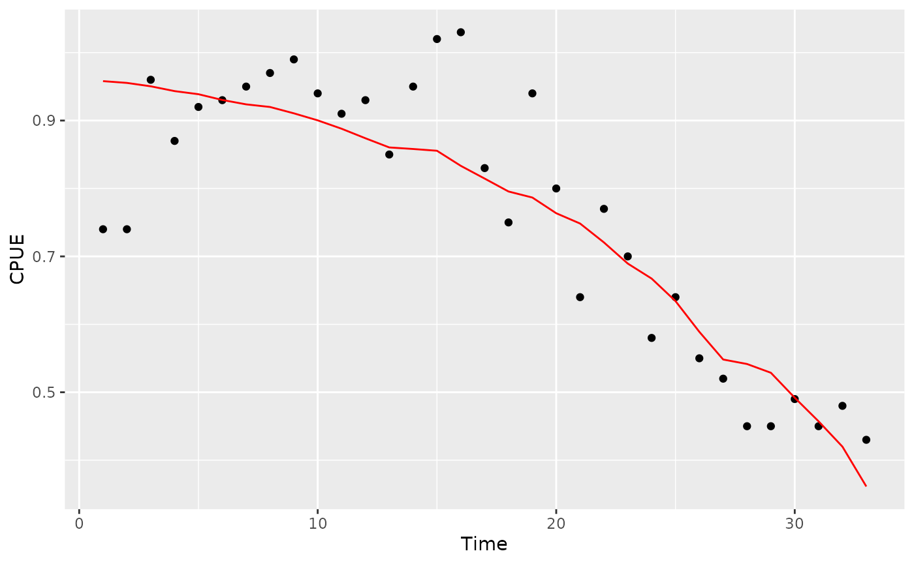

Fitting a CSDM model
Fitting_a_CSDM_model.Rmd
library(csdm)- Let’s use the data provided in the package and taken from Delury’s population estimator data.
delury <- csdm::delury_lobster- Let’s run the model.
delury_model <- csdm(catch = cpue,
effort = traps,
biomass = ~1,
q = ~1,
s = ~1,
data = delury,
prior = list(B0_logmean_prior_sd = log(1000),
B0_group_prior_logsd = log(100)),
upper = c(B0 = 1e10, q = 1e-3, s = 100),
chains = 4,
iter = 1000)
#>
#> SAMPLING FOR MODEL 'nonlinear_cpue_grouped' NOW (CHAIN 1).
#> Chain 1:
#> Chain 1: Gradient evaluation took 0.000633 seconds
#> Chain 1: 1000 transitions using 10 leapfrog steps per transition would take 6.33 seconds.
#> Chain 1: Adjust your expectations accordingly!
#> Chain 1:
#> Chain 1:
#> Chain 1: Iteration: 1 / 1000 [ 0%] (Warmup)
#> Chain 1: Iteration: 100 / 1000 [ 10%] (Warmup)
#> Chain 1: Iteration: 200 / 1000 [ 20%] (Warmup)
#> Chain 1: Iteration: 300 / 1000 [ 30%] (Warmup)
#> Chain 1: Iteration: 400 / 1000 [ 40%] (Warmup)
#> Chain 1: Iteration: 500 / 1000 [ 50%] (Warmup)
#> Chain 1: Iteration: 501 / 1000 [ 50%] (Sampling)
#> Chain 1: Iteration: 600 / 1000 [ 60%] (Sampling)
#> Chain 1: Iteration: 700 / 1000 [ 70%] (Sampling)
#> Chain 1: Iteration: 800 / 1000 [ 80%] (Sampling)
#> Chain 1: Iteration: 900 / 1000 [ 90%] (Sampling)
#> Chain 1: Iteration: 1000 / 1000 [100%] (Sampling)
#> Chain 1:
#> Chain 1: Elapsed Time: 18.0691 seconds (Warm-up)
#> Chain 1: 9.03908 seconds (Sampling)
#> Chain 1: 27.1082 seconds (Total)
#> Chain 1:
#>
#> SAMPLING FOR MODEL 'nonlinear_cpue_grouped' NOW (CHAIN 2).
#> Chain 2:
#> Chain 2: Gradient evaluation took 0.000615 seconds
#> Chain 2: 1000 transitions using 10 leapfrog steps per transition would take 6.15 seconds.
#> Chain 2: Adjust your expectations accordingly!
#> Chain 2:
#> Chain 2:
#> Chain 2: Iteration: 1 / 1000 [ 0%] (Warmup)
#> Chain 2: Iteration: 100 / 1000 [ 10%] (Warmup)
#> Chain 2: Iteration: 200 / 1000 [ 20%] (Warmup)
#> Chain 2: Iteration: 300 / 1000 [ 30%] (Warmup)
#> Chain 2: Iteration: 400 / 1000 [ 40%] (Warmup)
#> Chain 2: Iteration: 500 / 1000 [ 50%] (Warmup)
#> Chain 2: Iteration: 501 / 1000 [ 50%] (Sampling)
#> Chain 2: Iteration: 600 / 1000 [ 60%] (Sampling)
#> Chain 2: Iteration: 700 / 1000 [ 70%] (Sampling)
#> Chain 2: Iteration: 800 / 1000 [ 80%] (Sampling)
#> Chain 2: Iteration: 900 / 1000 [ 90%] (Sampling)
#> Chain 2: Iteration: 1000 / 1000 [100%] (Sampling)
#> Chain 2:
#> Chain 2: Elapsed Time: 16.9227 seconds (Warm-up)
#> Chain 2: 5.10019 seconds (Sampling)
#> Chain 2: 22.0229 seconds (Total)
#> Chain 2:
#>
#> SAMPLING FOR MODEL 'nonlinear_cpue_grouped' NOW (CHAIN 3).
#> Chain 3:
#> Chain 3: Gradient evaluation took 0.000617 seconds
#> Chain 3: 1000 transitions using 10 leapfrog steps per transition would take 6.17 seconds.
#> Chain 3: Adjust your expectations accordingly!
#> Chain 3:
#> Chain 3:
#> Chain 3: Iteration: 1 / 1000 [ 0%] (Warmup)
#> Chain 3: Iteration: 100 / 1000 [ 10%] (Warmup)
#> Chain 3: Iteration: 200 / 1000 [ 20%] (Warmup)
#> Chain 3: Iteration: 300 / 1000 [ 30%] (Warmup)
#> Chain 3: Iteration: 400 / 1000 [ 40%] (Warmup)
#> Chain 3: Iteration: 500 / 1000 [ 50%] (Warmup)
#> Chain 3: Iteration: 501 / 1000 [ 50%] (Sampling)
#> Chain 3: Iteration: 600 / 1000 [ 60%] (Sampling)
#> Chain 3: Iteration: 700 / 1000 [ 70%] (Sampling)
#> Chain 3: Iteration: 800 / 1000 [ 80%] (Sampling)
#> Chain 3: Iteration: 900 / 1000 [ 90%] (Sampling)
#> Chain 3: Iteration: 1000 / 1000 [100%] (Sampling)
#> Chain 3:
#> Chain 3: Elapsed Time: 21.2067 seconds (Warm-up)
#> Chain 3: 9.65802 seconds (Sampling)
#> Chain 3: 30.8648 seconds (Total)
#> Chain 3:
#>
#> SAMPLING FOR MODEL 'nonlinear_cpue_grouped' NOW (CHAIN 4).
#> Chain 4:
#> Chain 4: Gradient evaluation took 0.000628 seconds
#> Chain 4: 1000 transitions using 10 leapfrog steps per transition would take 6.28 seconds.
#> Chain 4: Adjust your expectations accordingly!
#> Chain 4:
#> Chain 4:
#> Chain 4: Iteration: 1 / 1000 [ 0%] (Warmup)
#> Chain 4: Iteration: 100 / 1000 [ 10%] (Warmup)
#> Chain 4: Iteration: 200 / 1000 [ 20%] (Warmup)
#> Chain 4: Iteration: 300 / 1000 [ 30%] (Warmup)
#> Chain 4: Iteration: 400 / 1000 [ 40%] (Warmup)
#> Chain 4: Iteration: 500 / 1000 [ 50%] (Warmup)
#> Chain 4: Iteration: 501 / 1000 [ 50%] (Sampling)
#> Chain 4: Iteration: 600 / 1000 [ 60%] (Sampling)
#> Chain 4: Iteration: 700 / 1000 [ 70%] (Sampling)
#> Chain 4: Iteration: 800 / 1000 [ 80%] (Sampling)
#> Chain 4: Iteration: 900 / 1000 [ 90%] (Sampling)
#> Chain 4: Iteration: 1000 / 1000 [100%] (Sampling)
#> Chain 4:
#> Chain 4: Elapsed Time: 15.5869 seconds (Warm-up)
#> Chain 4: 8.15555 seconds (Sampling)
#> Chain 4: 23.7425 seconds (Total)
#> Chain 4:
#> Warning: There were 199 divergent transitions after warmup. See
#> https://mc-stan.org/misc/warnings.html#divergent-transitions-after-warmup
#> to find out why this is a problem and how to eliminate them.
#> Warning: Examine the pairs() plot to diagnose sampling problems
#> Warning: The largest R-hat is 1.16, indicating chains have not mixed.
#> Running the chains for more iterations may help. See
#> https://mc-stan.org/misc/warnings.html#r-hat
#> Warning: Bulk Effective Samples Size (ESS) is too low, indicating posterior means and medians may be unreliable.
#> Running the chains for more iterations may help. See
#> https://mc-stan.org/misc/warnings.html#bulk-ess
#> Warning: Tail Effective Samples Size (ESS) is too low, indicating posterior variances and tail quantiles may be unreliable.
#> Running the chains for more iterations may help. See
#> https://mc-stan.org/misc/warnings.html#tail-ess- You can extract the fit for cpue, as well as the biomass estimate.
get_cpue_fit(delury_model)
#> Warning: `gather_()` was deprecated in tidyr 1.2.0.
#> Please use `gather()` instead.
#> This warning is displayed once every 8 hours.
#> Call `lifecycle::last_lifecycle_warnings()` to see where this warning was generated.
#> # A tibble: 33 × 14
#> t cpue_fit .lower .upper .width .point .inter…¹ date catch…² traps cpue
#> <int> <dbl> <dbl> <dbl> <dbl> <chr> <chr> <int> <int> <int> <dbl>
#> 1 1 0.957 0.915 1.02 0.95 median qi 2 147 200 0.74
#> 2 2 0.954 0.913 1.01 0.95 median qi 3 2796 3780 0.74
#> 3 3 0.949 0.909 1.00 0.95 median qi 4 6888 7174 0.96
#> 4 4 0.943 0.903 0.992 0.95 median qi 5 7723 8850 0.87
#> 5 5 0.938 0.899 0.984 0.95 median qi 8 5330 5793 0.92
#> 6 6 0.929 0.893 0.970 0.95 median qi 9 8839 9504 0.93
#> 7 7 0.923 0.887 0.961 0.95 median qi 10 6324 6655 0.95
#> 8 8 0.920 0.884 0.956 0.95 median qi 11 3569 3685 0.97
#> 9 9 0.911 0.876 0.945 0.95 median qi 12 8120 8202 0.99
#> 10 10 0.901 0.865 0.933 0.95 median qi 13 8084 8585 0.94
#> # … with 23 more rows, 3 more variables: traps_cum <int>, cpue_l <dbl>,
#> # cpue_l10 <dbl>, and abbreviated variable names ¹.interval, ²catch_pounds
#> # ℹ Use `print(n = ...)` to see more rows, and `colnames()` to see all variable names
get_biomass(delury_model)
#> # A tibble: 33 × 13
#> biomass .lower .upper .width .point .inte…¹ date catch…² traps cpue traps…³
#> <dbl> <dbl> <dbl> <dbl> <chr> <chr> <int> <int> <int> <dbl> <int>
#> 1 172164. 1.65e5 2.04e5 0.95 median qi 2 147 200 0.74 200
#> 2 172016. 1.65e5 2.04e5 0.95 median qi 3 2796 3780 0.74 3980
#> 3 169219. 1.62e5 2.01e5 0.95 median qi 4 6888 7174 0.96 11154
#> 4 162332. 1.55e5 1.95e5 0.95 median qi 5 7723 8850 0.87 20004
#> 5 154632. 1.48e5 1.87e5 0.95 median qi 8 5330 5793 0.92 25797
#> 6 149302. 1.42e5 1.82e5 0.95 median qi 9 8839 9504 0.93 35301
#> 7 140464. 1.33e5 1.73e5 0.95 median qi 10 6324 6655 0.95 41956
#> 8 134141. 1.27e5 1.66e5 0.95 median qi 11 3569 3685 0.97 45641
#> 9 130567. 1.24e5 1.63e5 0.95 median qi 12 8120 8202 0.99 53843
#> 10 122447. 1.15e5 1.55e5 0.95 median qi 13 8084 8585 0.94 62428
#> # … with 23 more rows, 2 more variables: cpue_l <dbl>, cpue_l10 <dbl>, and
#> # abbreviated variable names ¹.interval, ²catch_pounds, ³traps_cum
#> # ℹ Use `print(n = ...)` to see more rows, and `colnames()` to see all variable names- You can also get default plots for cpue and biomass.
plot(delury_model)
plot_biomass(delury_model)